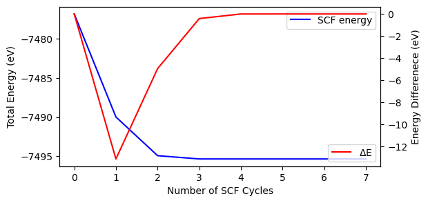
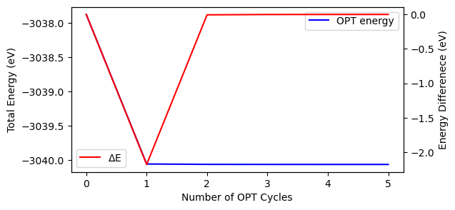

Output Analysis
The standard screen output files (.out or .outp files) generated by the ‘crystal’ and ‘properties’ executables of CRYSTAL package can be analyzed by CRYSTALpytools.
The ‘crystal_io.Crystal_output’ class
Methods for ‘crystal’ output files are defined in the crystal_io.Crystal_output class. For phonon / spectra / thermodynamic / elastic properties, please refer to the corresponding modules. Here ‘fundamental’ properties are substracted.
Geometry
Get geometry from SCF calculation. Return to a geometry.CStructure class, which is inherited from the pymatgen.core.structure.Structure class.
[1]:
from CRYSTALpytools.crystal_io import Crystal_output
struc = Crystal_output('out_mgoSCF.out').get_geometry()
print(struc)
Full Formula (Mg1 O1)
Reduced Formula: MgO
abc : 2.981869 2.981869 2.981869
angles: 60.000000 60.000000 60.000000
pbc : True True True
Sites (2)
# SP a b c
--- ---- --- --- ---
0 Mg 0 0 0
1 O 0.5 0.5 0.5
Get the optimized structure from a 0D molecule optimization and writes the ‘fort.34’ (.gui) file.
NOTE
Currently, pymatgen symmetry analysis is limited to 3D systems. If symmetry is kept during optimization, use symmetry=initial to read the symmetry operators when calculaton starts.
[2]:
from CRYSTALpytools.crystal_io import Crystal_output
struc = Crystal_output('out_coOpt.out').get_geometry(
initial=False, write_gui=True, gui_name='out_coOpt.gui', symmetry='initial')
print(struc)
! cat out_coOpt.gui
Full Formula (C1 O1)
Reduced Formula: CO
abc : 500.000000 500.000000 500.000000
angles: 90.000000 90.000000 90.000000
pbc : False False False
Sites (2)
# SP a b c
--- ---- --------- -------- ---------
0 C -0.000127 -8e-05 -6.4e-05
1 O 0.001727 0.00108 0.000864
0 1 1
5.000000000000E+02 0.000000000000E+00 0.000000000000E+00
0.000000000000E+00 5.000000000000E+02 0.000000000000E+00
0.000000000000E+00 0.000000000000E+00 5.000000000000E+02
1
1.000000000000 0.000000000000 0.000000000000
0.000000000000 1.000000000000 0.000000000000
0.000000000000 0.000000000000 1.000000000000
0.000000000000 0.000000000000 0.000000000000
2
6 -6.372620712800E-02 -3.982887945500E-02 -3.186310356400E-02
8 8.637262071280E-01 5.398288794550E-01 4.318631035640E-01
1 1
Symmetry Operators
Get symmetry operators of the initial / last geometry with initial option to be True / False. It is consistent with CRYSTAL output file, i.e. in fractional coordinates of the cell.
[3]:
from CRYSTALpytools.crystal_io import Crystal_output
out = Crystal_output('out_coOpt.out')
# Symmetry operators
print("Symmetry operators = \n %s \n" % out.get_symmops())
Symmetry operators =
[[[1. 0. 0.]
[0. 1. 0.]
[0. 0. 1.]
[0. 0. 0.]]]
Basic Convergence
The get_convergence() method provides a basic method to substract SCF/OPT convergence information. More detailed information is available with get_scf_convergence() or get_opt_convergence.
[4]:
from CRYSTALpytools.crystal_io import Crystal_output
out = Crystal_output('out_coOpt.out')
out.get_convergence()
print('Final optimization energy {:.4f} eV'.format(out.final_energy))
print('Optimization energy difference (eV)')
print(out.opt_deltae)
Final optimization energy -3040.0635 eV
Optimization energy difference (eV)
[ 0.00000000e+00 -2.17745513e+00 -5.46948864e-03 -1.02859040e-03
-2.17364553e-04 -1.47186388e-06]
get_final_energy() is a shortcut.
[5]:
from CRYSTALpytools.crystal_io import Crystal_output
out = Crystal_output('out_coOpt.out')
print('Final optimization energy {:.4f} eV'.format(out.get_final_energy()))
Final optimization energy -3040.0635 eV
SCF convergence
Get SCF convergence history with the get_scf_convergence() method.
NOTE
The
scf_energyattribute refers to the DFT total energy. Thefinal_energyattribute includes empirical correction terms (DFT-D, gCP…).final_energyis valid only whenscf_status='converged'.Even though, in principle, this method also reads SCF from optimization output. To avoid ambiguity, use the
get_opt_convergence()method withscf_history=True.
[7]:
from CRYSTALpytools.crystal_io import Crystal_output
import matplotlib.pyplot as plt
out = Crystal_output('out_mgoSCF.out').get_scf_convergence()
print('SCF convergence status = {}'.format(out.scf_status))
print('SCF number of cycles = {:d}'.format(out.scf_cycles))
print('Final energy = {:.6f} eV'.format(out.final_energy))
fig, ax = plt.subplots(1, 1, figsize=[6, 3])
x = [i for i in range(out.scf_cycles)]
ax.plot(x, out.scf_energy, 'b-', label='SCF energy')
ax.set_xlabel('Number of SCF Cycles')
ax.set_ylabel('Total Energy (eV)')
ax.legend()
ax2 = ax.twinx()
ax2.plot(x, out.scf_deltae, 'r-', label=r'$\Delta$E')
ax2.set_ylabel('Energy Differenece (eV)')
ax2.legend()
SCF convergence status = converged
SCF number of cycles = 8
Final energy = -7495.338004 eV
[7]:
<matplotlib.legend.Legend at 0x7fc55eac8af0>

Fermi energy
Get fermi energy (and history) from SCF calculation.
NOTE
For ‘SPINLOCK’, Fermi energy returns to 0. For insulators, Fermi energy returns to VBM.
[8]:
from CRYSTALpytools.crystal_io import Crystal_output
out = Crystal_output('out_gMVsaddleSCF.out').get_fermi_energy(history=True)
print('Converged Fermi energy = {:.2f} eV'.format(out[-1]))
print('Fermi energy history (eV):')
print(out)
Converged Fermi energy = -2.50 eV
Fermi energy history (eV):
[ 0. 0. 0. 0. 0. 0.
-2.43921236 -2.43860653 -2.4399284 -2.49155123 -2.49509761 -2.49855836
-2.50011667 -2.50167602 -2.50192865 -2.50190963 -2.50187654 -2.50197096]
Band gap
Get band gap from SCF calculation.
NOTE
For ‘SPINLOCK’ or conducting systems, energy gap returns to 0.
[9]:
from CRYSTALpytools.crystal_io import Crystal_output
out = Crystal_output('out_gMVsaddleSCF.out').get_band_gap(history=True)
print('Converged gaps = alpha : {:.4f} eV; beta : {:.4f} eV'.format(out[-1,0], out[-1,1]))
print('Alpha-gap history:')
print(out[:, 0])
Converged gaps = alpha : 0.1204 eV; beta : 0.1205 eV
Alpha-gap history:
[0. 0. 0. 0. 0. 0. 0. 0. 0. 0.1292
0.1255 0.123 0.121 0.1201 0.1203 0.1204 0.1204 0.1204]
Mulliken Charge
Get Mulliken charges of converged SCF / OPT calculations. The keyword ‘PPAN’ required. Currently it only reads charges per atom.
[10]:
from CRYSTALpytools.crystal_io import Crystal_output
out = Crystal_output('out_gMVsaddleSCF.out').get_mulliken_charges()
print('Charges of atom 1: Total = {:.4f}; Alpha = {:.4f}; Beta = {:.4f}'.format(
out[0, 0], out[0, 1], out[0, 2]
))
Charges of atom 1: Total = 6.0040; Alpha = 3.0020; Beta = 3.0020
Optimization Convergence
Get optimization convergence history with get_opt_convergence() method.
NOTE
The opt_energy attribute refers to total DFT energy with corrections. The opt_deltae attribute refers to energy difference between 2 optimization steps.
[11]:
from CRYSTALpytools.crystal_io import Crystal_output
import matplotlib.pyplot as plt
out = Crystal_output('out_coOpt.out').get_opt_convergence()
print('OPT convergence status = {}'.format(out.opt_status))
print('OPT number of cycles = {:d}'.format(out.opt_cycles))
print('Final energy = {:.6f} eV'.format(out.final_energy))
print('Final RMS Gradient = {:.4f} Hartree/Bohr'.format(out.opt_rmsgrad[-1]))
fig, ax = plt.subplots(1, 1, figsize=[6, 3])
x = [i for i in range(out.opt_cycles)]
ax.plot(x, out.opt_energy, 'b-', label='OPT energy')
ax.set_xlabel('Number of OPT Cycles')
ax.set_ylabel('Total Energy (eV)')
ax.legend()
ax2 = ax.twinx()
ax2.plot(x, out.opt_deltae, 'r-', label=r'$\Delta$E')
ax2.set_ylabel('Energy Differenece (eV)')
ax2.legend()
OPT convergence status = converged
OPT number of cycles = 6
Final energy = -3040.063479 eV
Final RMS Gradient = 0.0003 Hartree/Bohr
[11]:
<matplotlib.legend.Legend at 0x7fc55ec35610>

The user can get geometry and write into ‘fort.34’ (.gui) files with write_gui=True and gui_name option.
[12]:
from CRYSTALpytools.crystal_io import Crystal_output
out = Crystal_output('out_mgoOpt.out').get_opt_convergence(
write_gui=True, gui_name='out_mgoOpt.optstory/optstep')
With the scf_history option the user can access the SCF energies at every optimization step via the scf_energy attribute. Note that where scf_energy is a 1*nOptCycle list of arrays.
Read from ‘SCFOUT.LOG’ file. If scflog is not None, scf_history is set to ‘True’ automatically.
[13]:
from CRYSTALpytools.crystal_io import Crystal_output
out = Crystal_output('out_mgoOpt.out').get_opt_convergence(scflog='out_mgoOpt.SCFLOG')
print('SCF energy history of OPT step 2 (eV)')
print(out.scf_energy[1])
SCF energy history of OPT step 2 (eV)
[-7493.84141118 -7495.34015428 -7495.34062005 -7495.34066489
-7495.34067826 -7495.34067824 -7495.34067825]
Also possible to get SCF history with ‘ONELOG’ keyword enabled.
[14]:
from CRYSTALpytools.crystal_io import Crystal_output
out = Crystal_output('out_mgoOptONELOG.out').get_opt_convergence(scf_history=True)
print('SCF energy history of OPT step 2 (eV)')
print(out.scf_energy[1])
SCF energy history of OPT step 2 (eV)
[-7493.84141118 -7495.34015428 -7495.34062005 -7495.34066489
-7495.34067826 -7495.34067824 -7495.34067825]
Forces
grad=True reads the RMS and MAX gradients just as the get_opt_convergence() method.
NOTE
This method typically gets forces available in the output file. For usual optimization setups, that means forces of the INITIAL geometry. To get forces of last optimization step, use ‘ONELOG’ keyword for optimization or provide SCFOUT.LOG file via the scflog option.
[15]:
from CRYSTALpytools.crystal_io import Crystal_output
out = Crystal_output('out_mgoOpt.out')
out.get_forces(grad=True, scflog='out_mgoOpt.SCFLOG')
print('Unit: Hartree/Bohr\n')
print("Forces on cell = \n %s \n\n Forces on atoms = \n %s \n\n RMS Gradient = \n %s \n\n" %
(out.forces_cell[-1], out.forces_atoms[-1], out.opt_rmsgrad[-1]))
Unit: Hartree/Bohr
Forces on cell =
[[ 2.22325723e-06 -2.22325723e-06 -2.22325723e-06]
[-2.22325723e-06 2.22325723e-06 -2.22325723e-06]
[-2.22325723e-06 -2.22325723e-06 2.22325723e-06]]
Forces on atoms =
[[ 4.27329456e-16 3.87727906e-16 3.73283265e-16]
[-4.08825739e-16 -4.07966347e-16 -3.73283265e-16]]
RMS Gradient =
3.1e-05
The ‘crystal_io.Properties_output’ class
This class is developed mostly for external file formats rather than the screen output, which has been discussed thoroughly in other modules.
The screen output is used mostly for auxiliary proposes, which has been tested by calling other methods.
Geometry
A quick test of the get_geometry() method.
[16]:
from CRYSTALpytools.crystal_io import Properties_output
out = Properties_output('out_mgo.outp')
out.get_geometry()
[16]:
Structure Summary
Lattice
abc : 2.9818692962636706 2.9818692962636706 2.9818692962636706
angles : 60.00000000000001 60.00000000000001 60.00000000000001
volume : 18.747821578249994
A : 0.0 2.1085 2.1085
B : 2.1085 0.0 2.1085
C : 2.1085 2.1085 0.0
pbc : True True True
PeriodicSite: Mg (0.0, 0.0, 0.0) [0.0, 0.0, 0.0]
PeriodicSite: O (2.108, 2.108, 2.108) [0.4999, 0.4999, 0.4999]
For more information, please refer to the API documentations.